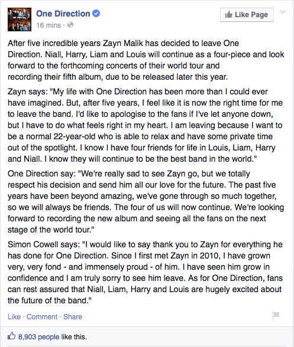
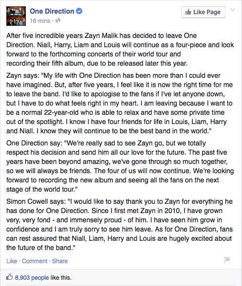

March 25, 2015
March 25, 2015 Zayn made up his mind and decided to leave the band, One Direction.

March 25, 2016
March 26, 2015 Zayn releases his debut album.
March 25, 2015 Zayn made up his mind and decided to leave the band, One Direction.

March 26, 2015 Zayn releases his debut album.